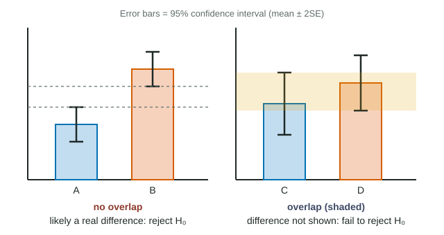

Is the taller bar really taller?
Beet cells keep a red, water-soluble substance behind selectively permeable membranes. Heat damages the membranes and the substance leaks out, so the water around a heated cube turns red. Eight cubes heated to 60 °C give a mean absorbance of 0.46; eight heated to 70 °C give 0.62. The second mean is higher, but another eight cubes would give slightly different means. How sure can you be that 70 °C really causes more leakage? A 95% confidence interval, drawn as an error bar, answers that on the graph itself.
Worked example: building and comparing 95% confidence intervals
Data: sideways movement of a labeled lipid in artificial membranes (faster means more fluid).
| Temperature | n | x̄ (µm²/s) | s | SE = s ÷ √n | 95% CI = x̄ ± 2SE |
|---|---|---|---|---|---|
| 15 °C | 9 | 1.8 | 0.30 | 0.30 ÷ 3 = 0.10 | 1.6 to 2.0 |
| 25 °C | 9 | 2.5 | 0.36 | 0.36 ÷ 3 = 0.12 | 2.26 to 2.74 |
| 35 °C | 4 | 3.0 | 0.60 | 0.60 ÷ 2 = 0.30 | 2.4 to 3.6 |
15 vs 25 °C: 1.6-2.0 and 2.26-2.74 do not overlap. The difference is likely real: reject the null hypothesis of no difference.
25 vs 35 °C: 2.26-2.74 and 2.4-3.6 overlap. The data do not show a difference: fail to reject the null. With only four membranes at 35 °C, the interval is wide; more membranes might reveal a difference.
What a 95% confidence interval means
The standard error, SE = s ÷ √n, measures how much a sample mean would wobble from sample to sample. Sample means are spread roughly normally around the true mean, so about 95% of them land within 2 SE of it. Turning that around: the range x̄ ± 2SE, built from your sample, very probably contains the true mean. That range is the 95% confidence interval. (Strictly, the multiplier is just under 2 for large samples and larger for small ones, about 2.3 for n = 9 and 3.2 for n = 4; the exam uses 2.)
Two things set its width: the spread of the data (s) and the sample size (n). More variable data widen it; more data narrow it. Because SE falls with √n, four times as many measurements halve the width.
Reading error bars: the overlap rule

- No overlap between two groups' 95% CI bars: the difference is unlikely to be due to chance. It is statistically significant, and you reject the null hypothesis.
- Overlap: the data do not show a difference. You fail to reject the null hypothesis. This is not evidence that the means are equal.
In the beet graph, the 95% CIs are 20 °C, 0.05-0.11; 40 °C, 0.06-0.14; 60 °C, 0.40-0.52; and 70 °C, 0.50-0.74. Leakage at 60 °C is clearly above 40 °C (no overlap), but 60 and 70 °C overlap, so those two are not shown to differ even though the means are 0.16 apart. The jump between 40 and 60 °C fits the biology: heat loosens the bilayer's hydrophobic core and unfolds membrane proteins, so the membrane stops acting as a selective barrier.
Error bars must say what they are
| Bar shows | Length | Tells you about | Overlap rule applies? |
|---|---|---|---|
| ± 1 SD (or 2 SD) | Longest | Spread of individual values | No |
| ± 1 SE | Shortest | Precision of the mean | No (too short; non-overlap is weak evidence) |
| ± 2 SE (95% CI) | Twice the SE bar | Range likely to hold the true mean | Yes |
When you draw error bars in a free-response answer, state in the key or caption that they show ± 2SE (95% CI).
Writing the conclusion
- "The 95% confidence intervals for 40 °C and 60 °C do not overlap, so the difference is statistically significant and we reject the null hypothesis that temperature has no effect on leakage."
- "The intervals for 60 °C and 70 °C overlap, so the data do not show a difference between them; we fail to reject the null hypothesis."
Avoid "proves", "accept the null" and "the means are the same".